Manual do usuário — programa de gestão de doações (versão local)
Código
MAN-FC-001
Revisão
01
Data
25/11/2026
Responsável
Isabelle Dutra
Versão do programa
1.1.0 ou mais nova
Público
Equipe da ONG. Os itens marcados com ADMIN são só para o administrador.
As telas deste manual usam dados fictícios (nomes "Exemplo", CPF 000.000.000-00).
Sumário
Antes de começar
Instalar o programa
Primeiro acesso ADMIN
Entrar e sair
Tela inicial (Dashboard)
Doadores
Doações
Interações
Exportar tabelas (CSV e PDF)
Usuários ADMIN
Backup ADMIN
Planilha Excel de consulta ADMIN
Alterar minha senha
Atualizações do programa
Recuperar os dados em outro computador ADMIN
Problemas comuns
1. Antes de começar
O Fênix Conecta guarda os doadores, as doações e as interações da ONG.
O programa funciona sem internet.
Os dados ficam só neste computador, em um arquivo protegido por criptografia.
Todas as pessoas que usam este computador veem os mesmos dados. Cada pessoa entra com o próprio e-mail e senha.
Se o programa for instalado em outro computador, aquele computador terá dados separados.
Para abrir este manual no programa, clique em Ajuda (manual) no menu ou em Ajuda: manual do usuário na tela de entrada.
Tipos de usuário
Função
Usuário comum
Administrador
Cadastrar e editar doadores, doações e interações
Sim
Sim
Excluir registros
Não
Sim
Exportar tabelas em CSV e PDF
Sim
Sim
Criar usuários e redefinir senhas
Não
Sim
Backup, pendrive e restaurar backup
Não (vê o status do backup)
Sim
Planilha Excel de consulta
Não
Sim
Ver a chave de recuperação
Não
Sim
Dados pessoais (LGPD)
O sistema tem CPF, CNPJ, telefone, e-mail e endereço dos doadores. Não envie estes dados por e-mail, WhatsApp ou redes sociais. Não deixe o computador aberto sem ninguém: clique em Sair ao terminar.
2. Instalar o programa
Faça a instalação uma vez em cada computador. Não é necessária a senha de administrador do Windows.
Abra o arquivo Fenix-Conecta-Setup-<versão>.exe (recebido por link ou pendrive).
Se o Windows mostrar "O Windows protegeu o computador", clique em Mais informações.
Clique em Executar assim mesmo.
Aguarde a instalação (cerca de 1 minuto). O programa abre sozinho no fim.
Depois, abra o programa pelo atalho Fênix Conecta na área de trabalho ou no menu Iniciar.
Por que aparece o aviso do Windows?
O instalador ainda não tem assinatura digital. O aviso não indica vírus. Instale só arquivos recebidos da responsável pelo sistema.
Desinstalar não apaga os dados
Se for preciso desinstalar (Configurações do Windows → Aplicativos → Fênix Conecta), os dados e os backups continuam no computador.
3. Primeiro acesso ADMIN
Na primeira vez, o programa pede o cadastro do administrador. Faça este passo com a pessoa responsável pela ONG. Não use dados de terceiros.
Digite o nome, o e-mail e a senha (no mínimo 8 caracteres).
Digite a senha de novo em Repita a senha.
Clique em Criar administrador.
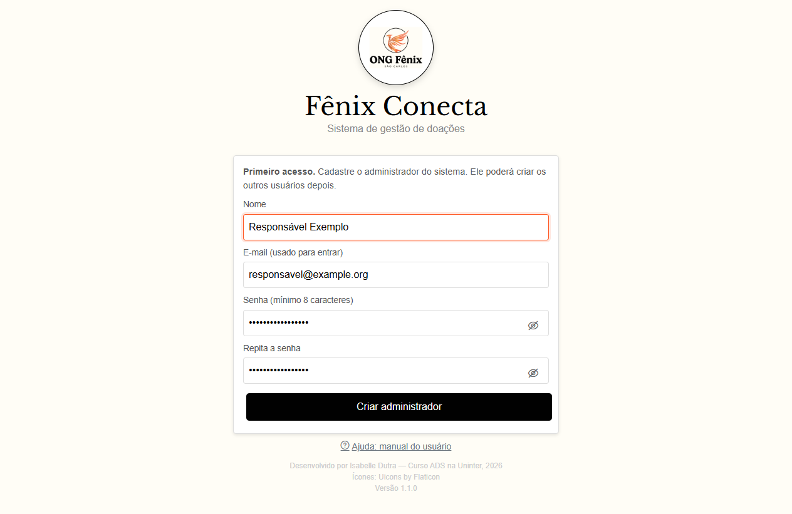
Figura 1 — Primeiro acesso: cadastro do administrador.
Chave de recuperação
Depois do cadastro, o programa mostra a chave de recuperação. Ela abre os dados se o Windows for reinstalado ou se o computador for trocado.
Clique em Imprimir e imprima a folha da chave.
Guarde a folha em local seguro, longe do computador (por exemplo, no cofre ou no arquivo da diretoria).
Marque "Imprimi (ou anotei) a chave e guardei em local seguro".
Clique em Continuar.
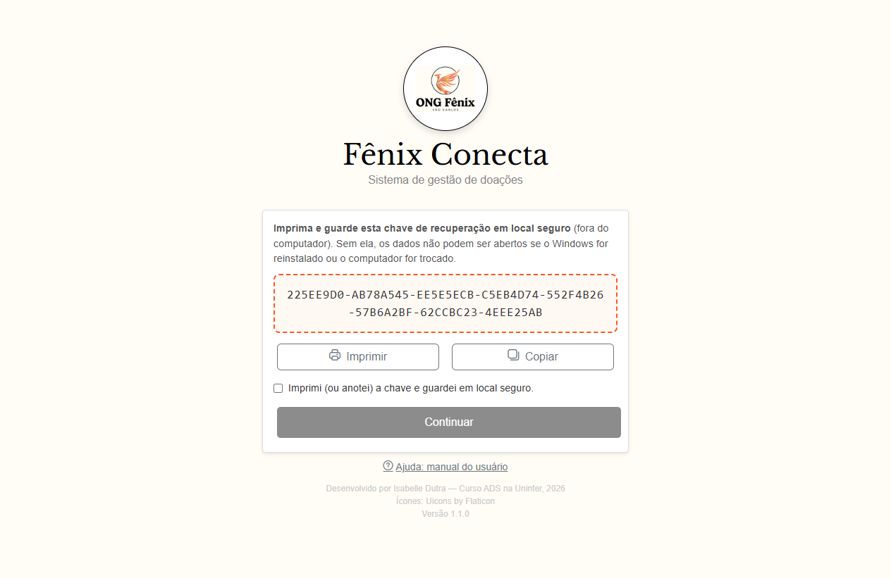
Figura 2 — Chave de recuperação: imprimir e guardar.
Sem a chave, os dados podem ser perdidos
Não tire foto da chave e não envie a chave por mensagem. Quem tiver a chave e uma cópia dos dados consegue ler os dados. O administrador pode ver a chave de novo no menu Chave de recuperação (pede a senha).
4. Entrar e sair
Abra o programa.
Digite seu e-mail e sua senha.
Clique em Entrar (ou aperte Enter).
Para ver a senha digitada, clique no olho dentro do campo. Marque Lembrar meu e-mail para o e-mail vir preenchido na próxima vez. O programa nunca guarda a senha.
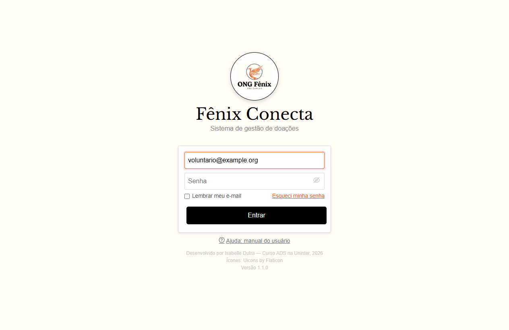
Figura 3 — Tela de entrada. O ícone de olho mostra a senha digitada.
Para sair, clique em Sair, no fim do menu à esquerda.
Depois de 5 senhas erradas seguidas, o programa espera 30 segundos antes de aceitar outra tentativa.
Esqueci minha senha
Na tela de entrada, clique em Esqueci minha senha.
Usuário comum: peça ao administrador para criar uma senha nova (capítulo 10).
Administrador: clique em Sou administrador: usar a chave.
Digite o seu e-mail, a chave de recuperação impressa no primeiro acesso e a senha nova duas vezes.
Clique em Criar senha nova e entre com a senha nova.
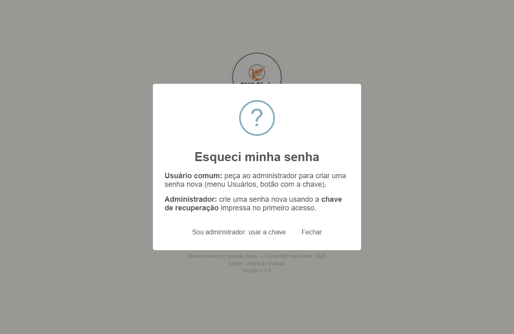
Figura 4 — Esqueci minha senha.
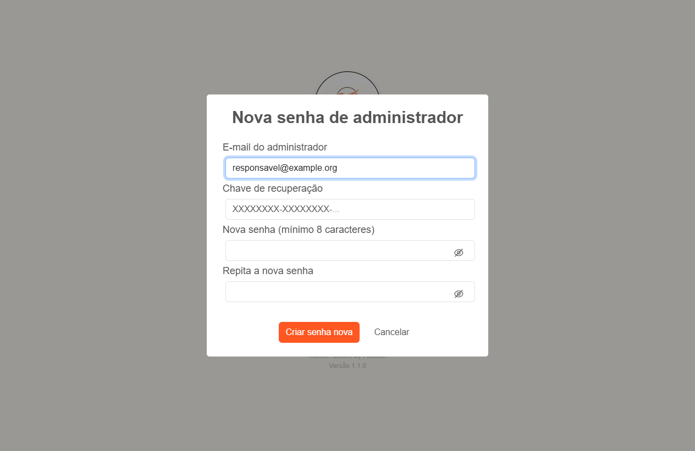
Figura 5 — Senha nova de administrador com a chave de recuperação.
5. Tela inicial (Dashboard)
A tela inicial mostra os totais: valor arrecadado, número de doadores, de doações e de interações.
Escolha o período do total arrecadado na lista abaixo do valor (última semana, mês, bimestre, trimestre, semestre, ano ou todo o período).
Use o menu à esquerda para abrir as outras telas.
No fim do menu aparece o Último backup (capítulo 11).
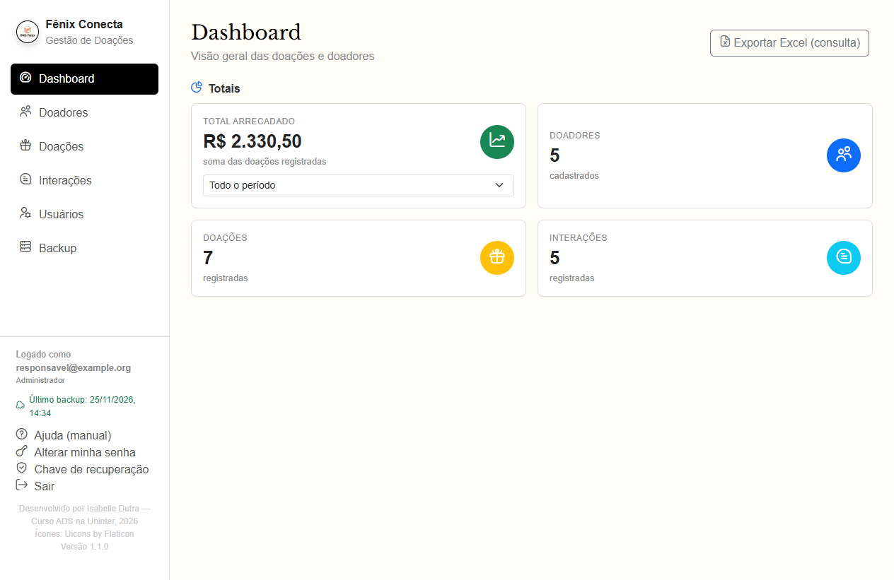
Figura 6 — Dashboard (visão do administrador).
6. Doadores
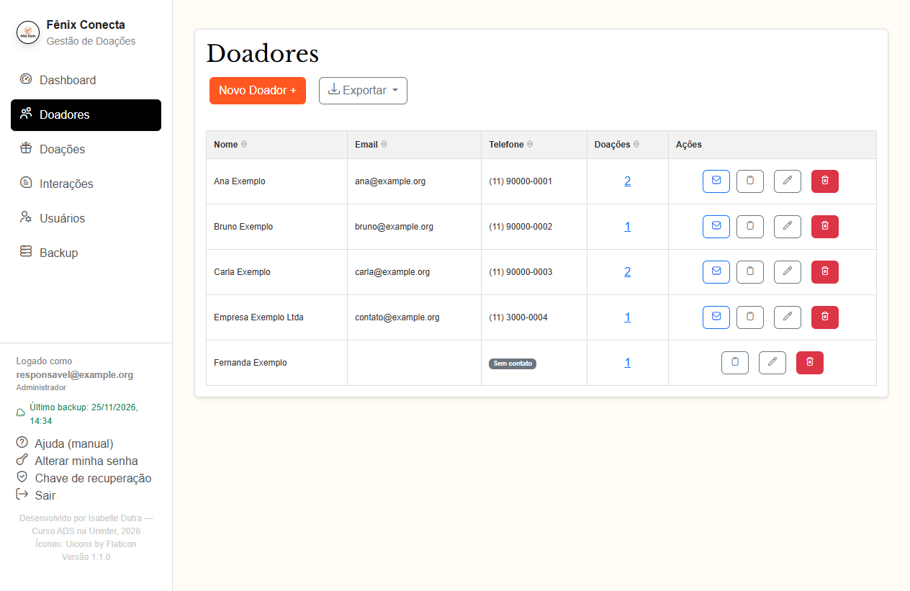
Figura 7 — Lista de doadores. Clique no título de uma coluna para ordenar.
Cadastrar um doador
Clique em Doadores no menu.
Clique em Novo Doador +.
Preencha o nome e o WhatsApp (obrigatórios) e os outros campos que tiver.
Se ainda não tiver nenhum contato da pessoa, marque Ainda sem informações de contato. Assim o WhatsApp deixa de ser obrigatório.
Clique em Criar.
Nas telas de edição, o botão se chama Salvar.
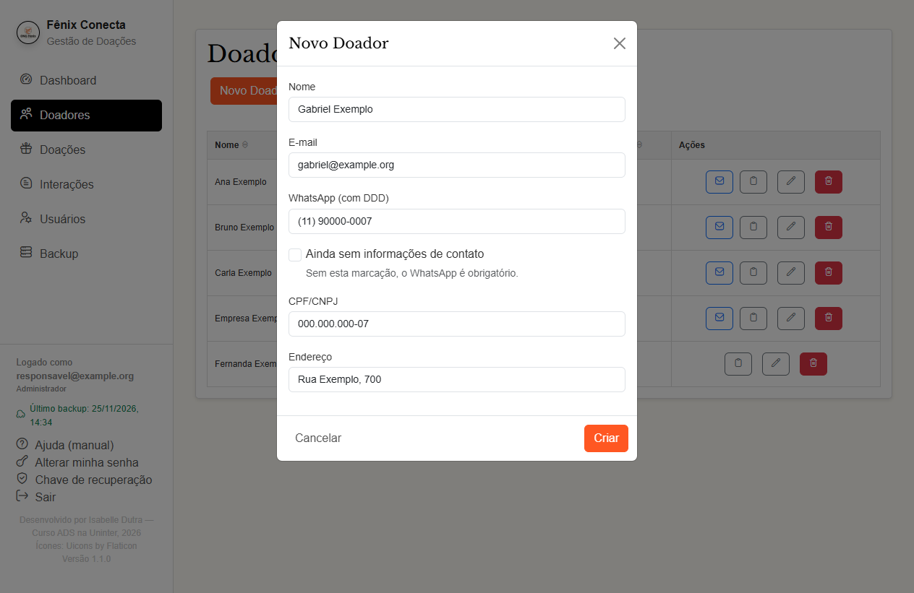
Figura 8 — Novo doador.
O programa confere os dados antes de salvar:
WhatsApp com DDD: 10 ou 11 números.
Doador sem contato aparece com o selo Sem contato na lista.
CPF com 11 números ou CNPJ com 14 números.
E-mail no formato nome@provedor.com.
Botões de cada doador
Botão
O que faz
Número na coluna Doações
Mostra as doações deste doador.
Envelope
Abre o programa de e-mail do computador com o endereço do doador.
Prancheta
Copia uma mensagem pronta de agradecimento. Cole a mensagem onde quiser.
Lápis
Edita os dados do doador.
Lixeira ADMIN
Exclui o doador. Só funciona se o doador não tiver doações nem interações.
7. Doações
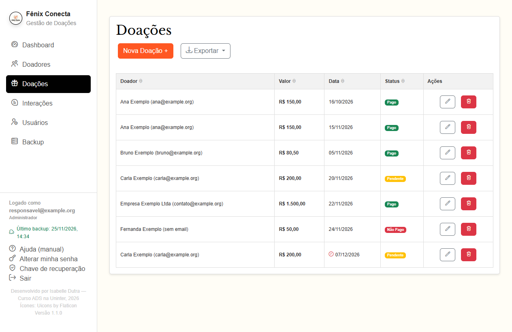
Figura 9 — Lista de doações. O relógio vermelho indica data futura (doação prometida).
Registrar uma doação
Clique em Doações no menu.
Clique em Nova Doação +.
Escolha o doador. Digite parte do nome para procurar.
Digite o valor (maior que zero) e confira a data.
Escolha a forma de pagamento.
Clique em Criar. A doação entra com o status Pendente.
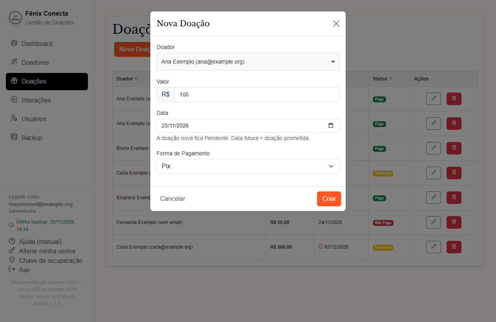
Figura 10 — Nova doação.
Marcar como paga
Clique no lápis da doação.
Em Status, escolha Pago (ou Não Pago).
Clique em Salvar.
Data futura = doação prometida
Uma doação com data futura só pode ficar Pendente. Para marcar como Pago ou Não Pago, a data precisa ser de hoje ou anterior.
Para cadastrar uma doação, o doador precisa estar cadastrado (capítulo 6).
8. Interações
Interação é qualquer contato com o doador ou com uma pessoa interessada: mensagem, ligação, e-mail, redes sociais ou visita. O programa registra quem cadastrou cada interação.
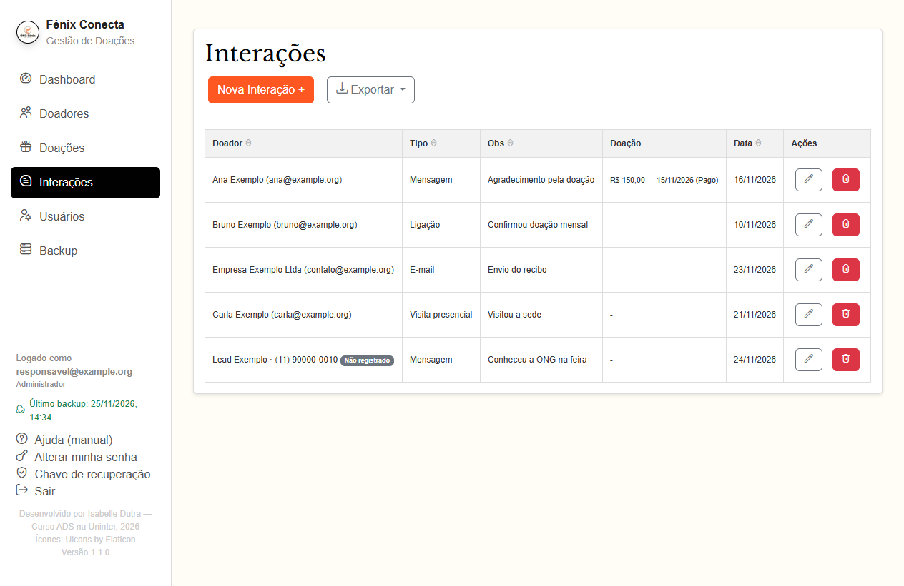
Figura 11 — Lista de interações.
Clique em Interações no menu.
Clique em Nova Interação +.
Em Doador ou pessoa, escolha o doador.
Se a interação for sobre uma doação, escolha a Doação relacionada (opcional).
Escolha o tipo de contato e escreva as observações (opcional).
Confira a data. A data não pode ser futura.
Clique em Criar.
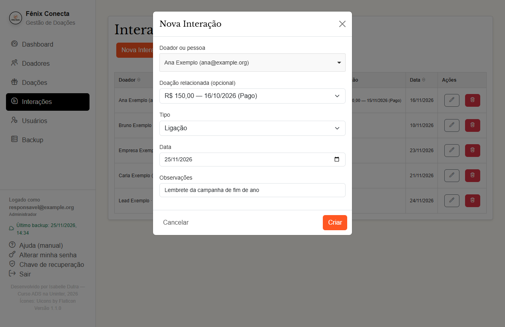
Figura 12 — Nova interação com doação relacionada.
Pessoa que ainda não é doadora (lead, prospecção)
Em Doador ou pessoa, escolha + Pessoa não registrada (lead / prospecção).
Digite o nome da pessoa (obrigatório) e o contato (opcional).
Preencha tipo, data e observações e clique em Criar.
Na lista, a interação aparece com o selo Não registrado. Se a pessoa virar doadora, cadastre-a em Doadores.
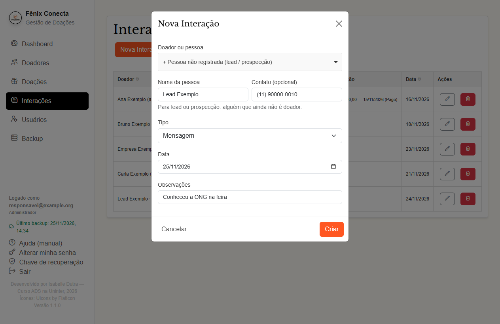
Figura 13 — Interação com pessoa não registrada.
9. Exportar tabelas (CSV e PDF)
Abra a tela (Doadores, Doações ou Interações).
Clique em Exportar.
Escolha CSV (Excel) ou PDF.
Escolha a pasta e clique em Salvar.
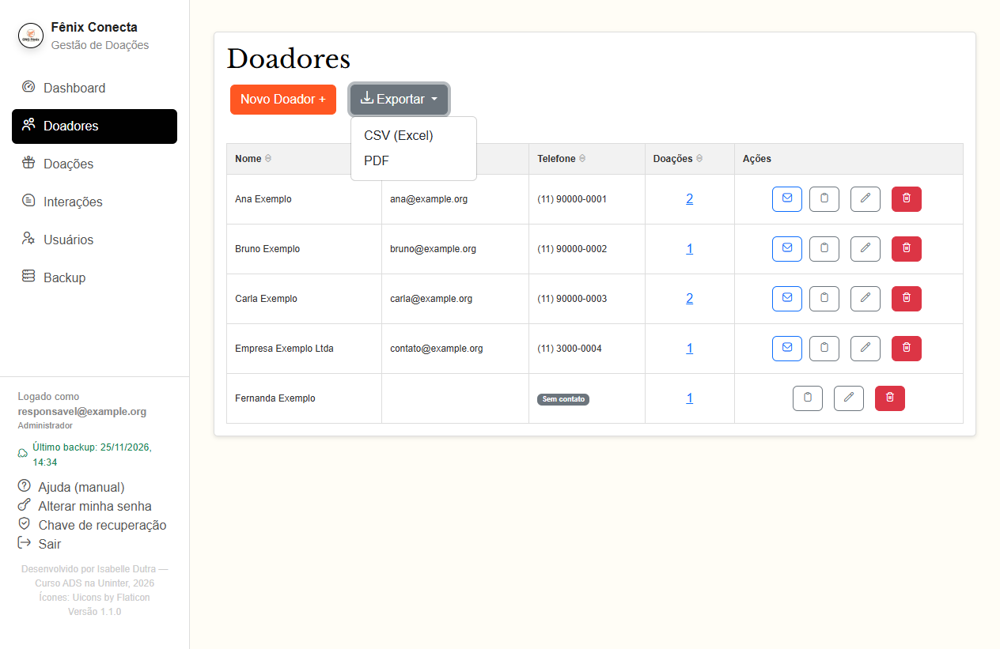
Figura 14 — Menu Exportar.
O arquivo exportado não tem proteção
CSV e PDF saem sem criptografia. Use só para consulta ou impressão. Apague o arquivo quando terminar. Não envie para fora da ONG.
10. Usuários ADMIN
Cada pessoa da equipe deve ter o próprio usuário. Não compartilhe senhas.
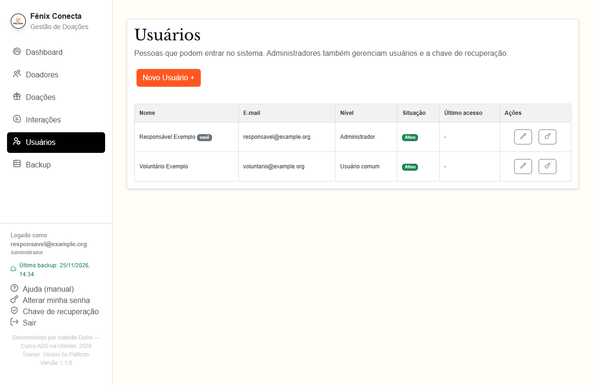
Figura 15 — Tela Usuários.
Criar um usuário
Clique em Usuários no menu.
Clique em Novo Usuário +.
Digite o nome, o e-mail e uma senha inicial (no mínimo 8 caracteres).
Escolha o nível: Usuário comum ou Administrador.
Clique em Criar.
Entregue a senha inicial à pessoa e peça para ela trocar a senha (capítulo 13).
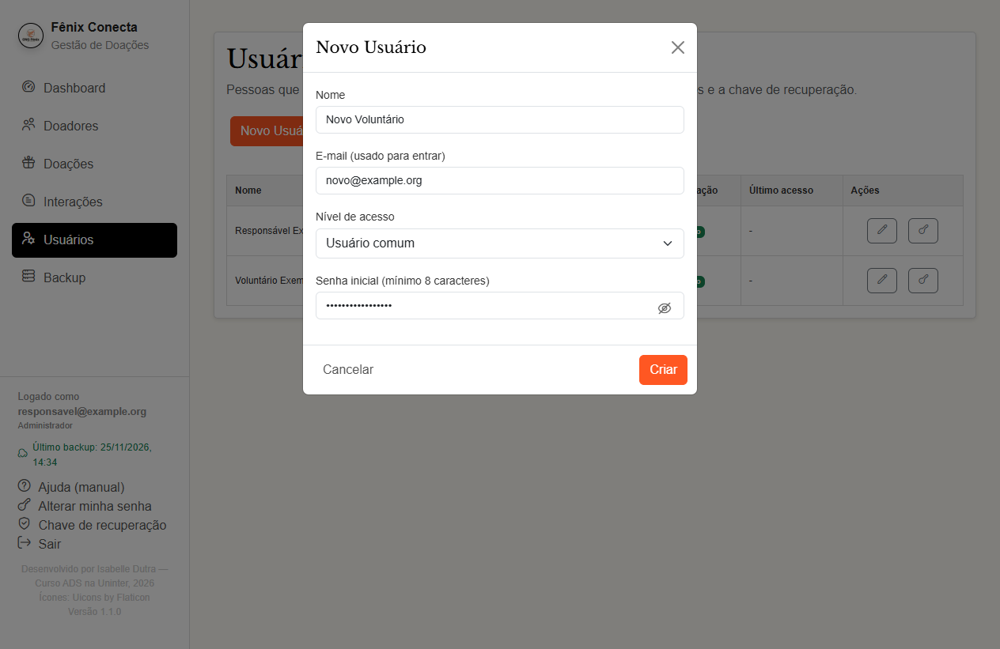
Figura 16 — Novo usuário.
Outras ações
Lápis: muda nome, e-mail ou nível. Desmarque Ativo para bloquear uma pessoa que saiu da ONG.
Chave: define uma nova senha (use quando a pessoa esquecer a senha).
O programa não deixa a ONG ficar sem nenhum administrador ativo.
O que o usuário comum vê
O usuário comum não vê os menus Usuários e Backup, nem os botões de excluir e de Excel.
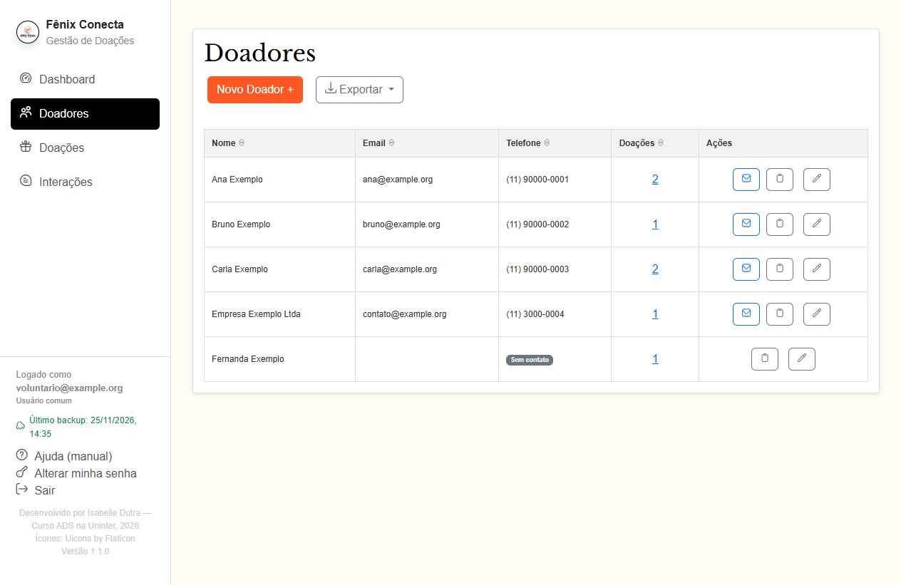
Figura 17 — Tela do usuário comum.
11. Backup ADMIN
Backup é uma cópia de segurança dos dados. A cópia é protegida por criptografia: só abre com a chave de recuperação.
Backup automático
O programa faz um backup por dia, quando é aberto pela primeira vez no dia.
A cópia vai para a pasta OneDrive\Backup Fenix Conecta. Sem OneDrive, vai para Documentos\Backup Fenix Conecta.
O programa guarda os backups dos últimos 30 dias e apaga os mais antigos.
No fim do menu aparece
Significado
O que fazer
Último backup: data (verde)
Tudo certo.
Nada.
Último backup: data (laranja)
Mais de 2 dias sem backup.
Abra a tela Backup e clique em Fazer backup agora.
Backup com problema (vermelho)
O último backup falhou.
Veja a mensagem na tela Backup. Confira se o OneDrive está conectado.
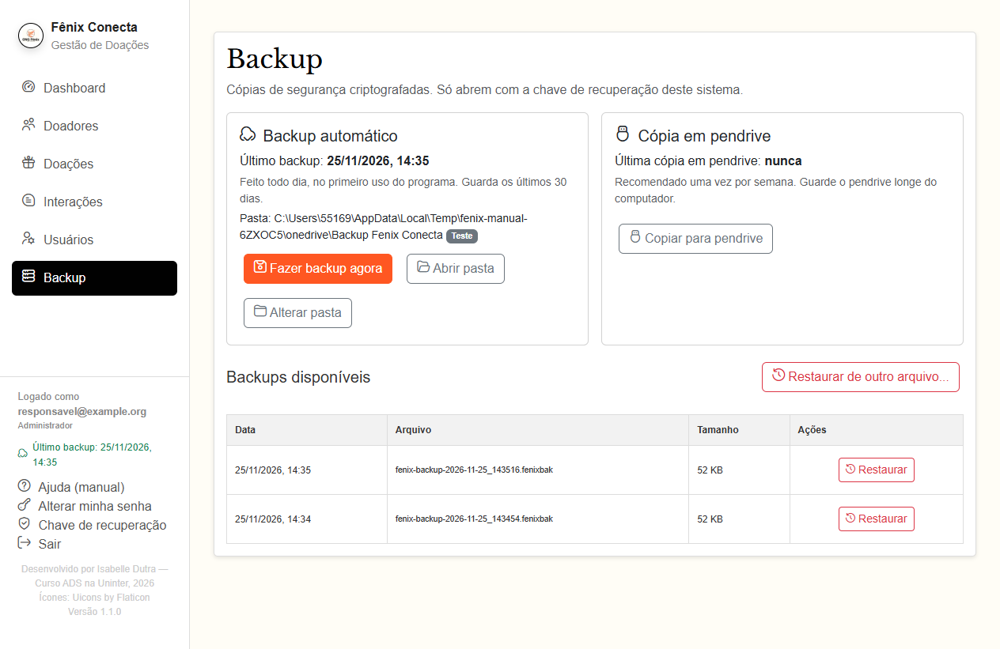
Figura 18 — Tela Backup.
Cópia semanal em pendrive
Uma vez por semana, o programa lembra o administrador de fazer uma cópia em pendrive. Esta cópia protege os dados se o computador quebrar ou for roubado.
Conecte o pendrive no computador.
No aviso, clique em Copiar agora (ou, na tela Backup, clique em Copiar para pendrive).
Escolha o pendrive e clique em Selecionar pasta.
Espere a mensagem "Cópia feita!".
Retire o pendrive com segurança e guarde longe do computador.
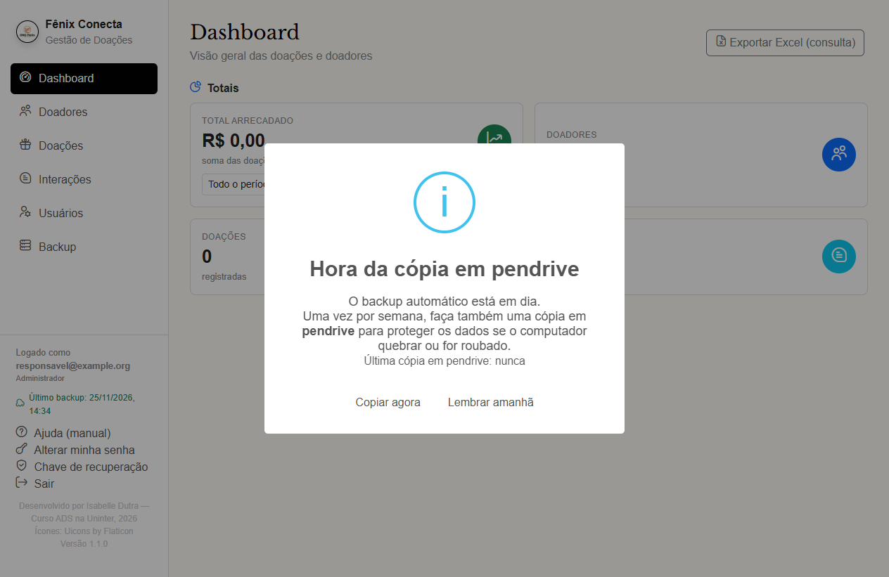
Figura 19 — Lembrete semanal. "Lembrar amanhã" adia o aviso por 1 dia.
Restaurar um backup
Use só se os dados atuais estiverem errados ou perdidos. A restauração troca todos os dados atuais pelos dados do backup.
Abra a tela Backup.
Na lista, clique em Restaurar no backup da data desejada. Para um backup do pendrive, clique em Restaurar de outro arquivo...
Confira a data e as quantidades mostradas.
Digite a sua senha de administrador e clique em Restaurar.
Entre de novo no programa.
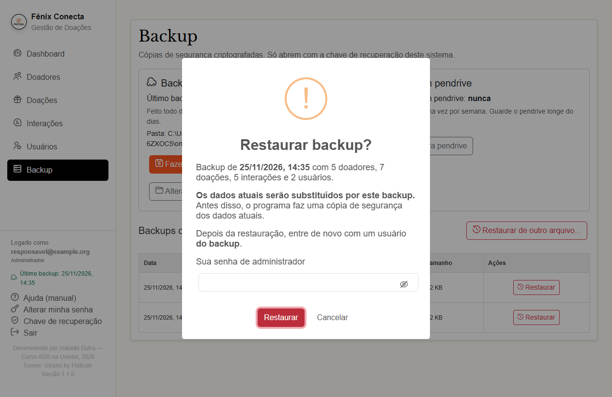
Figura 20 — Confirmação da restauração.
Os dados atuais não se perdem
Antes de restaurar, o programa faz um backup dos dados atuais. Se algo der errado, o programa volta os dados anteriores.
12. Planilha Excel de consulta ADMIN
Gera uma planilha com doadores, doações e interações para consulta.
Na tela inicial (Dashboard), clique em Exportar Excel (consulta).
Leia o aviso e clique em Entendi, exportar.
Escolha a pasta e clique em Salvar. O nome do arquivo tem a palavra "consulta" e a data.
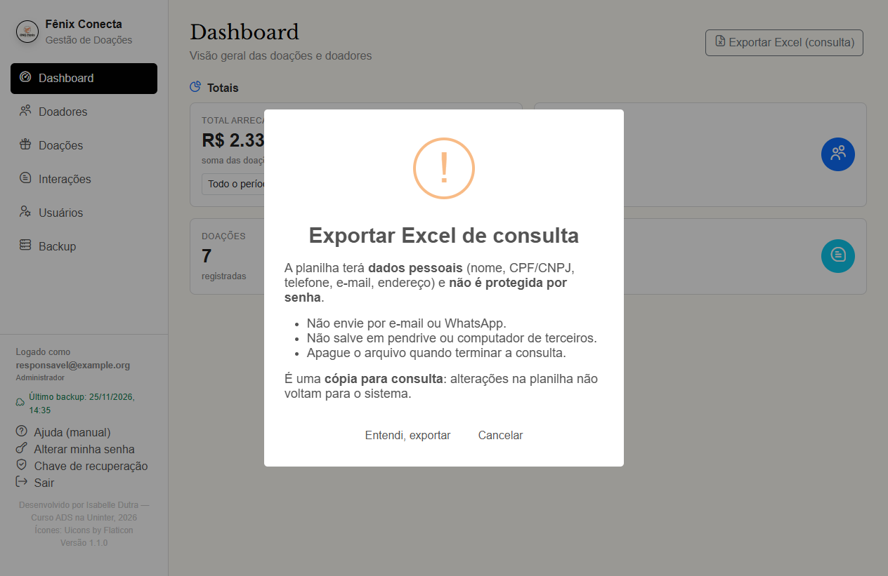
Figura 21 — Aviso antes de gerar a planilha.
A planilha é só para leitura
Alterações feitas na planilha não voltam para o programa. A planilha não tem senha: não envie, não copie para computadores de terceiros e apague o arquivo depois da consulta.
13. Alterar minha senha
No fim do menu, clique em Alterar minha senha.
Digite a senha atual.
Digite a nova senha duas vezes (no mínimo 8 caracteres).
Clique em Salvar.
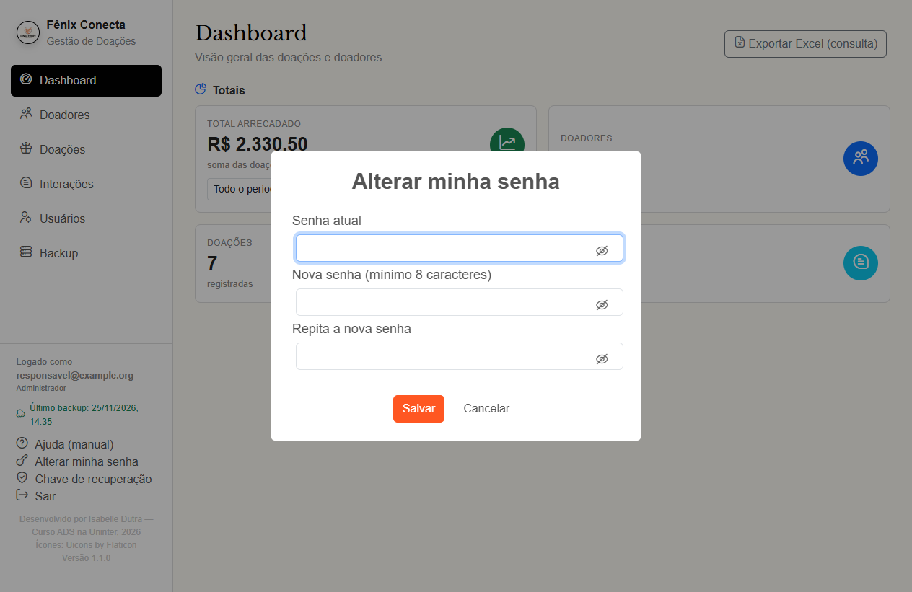
Figura 22 — Alterar minha senha.
Dica: use uma frase fácil de lembrar e difícil de adivinhar, por exemplo três palavras e um número.
14. Atualizações do programa
Quando o computador tem internet, o programa procura versões novas sozinho.
Quando a versão nova está pronta, aparece "Atualização pronta" no fim do menu.
A atualização é instalada quando você fecha o programa. Para instalar na hora, clique no aviso e em Instalar agora.
O programa faz um backup antes de instalar. Os dados continuam iguais.
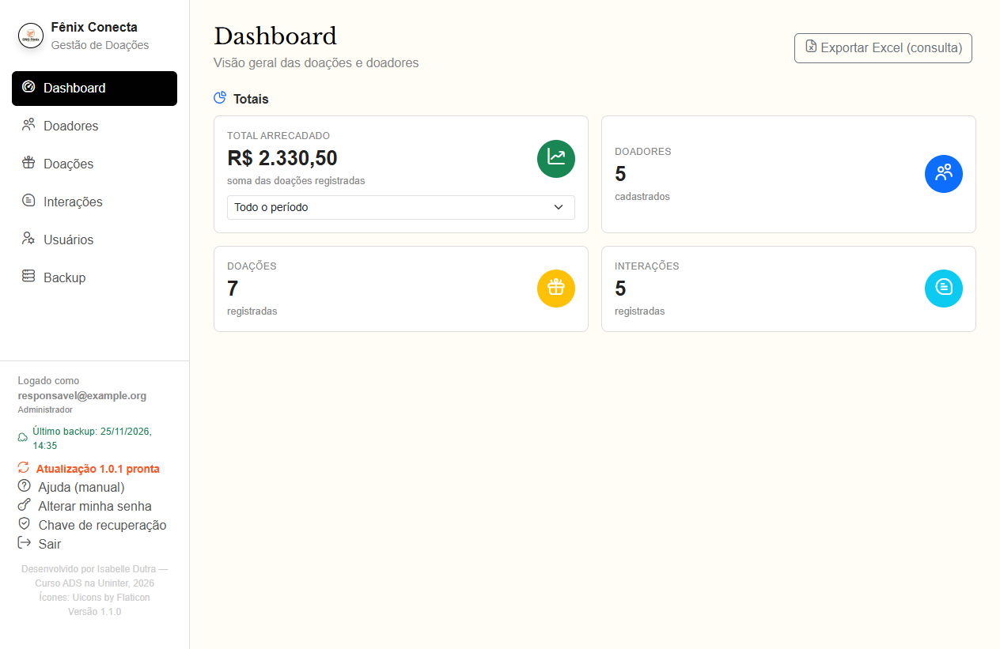
Figura 23 — Aviso de atualização no menu.
Sem internet, o programa funciona normalmente. A atualização espera a próxima conexão.
15. Recuperar os dados em outro computador ADMIN
Use este procedimento depois de reinstalar o Windows ou para passar os dados para um computador novo.
Mesmo computador, Windows reinstalado
Instale o programa (capítulo 2) e abra o programa.
O programa mostra "Os dados estão protegidos".
Digite a chave de recuperação impressa. Letras maiúsculas, minúsculas e espaços não importam.
Clique em Abrir dados e entre com o seu usuário.
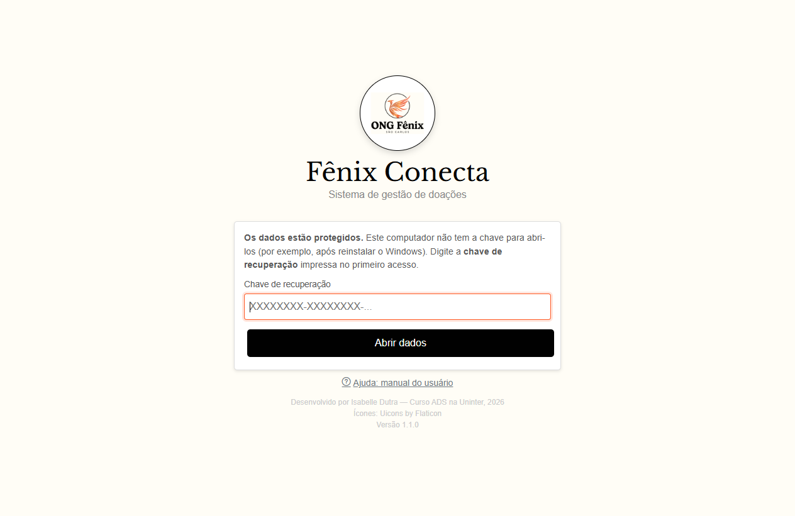
Figura 24 — Tela de recuperação.
Computador novo
Instale o programa no computador novo e faça o primeiro acesso (capítulo 3). Este cadastro é provisório.
Abra a tela Backup e clique em Restaurar de outro arquivo...
Escolha o backup mais recente (do OneDrive ou do pendrive).
Digite a chave de recuperação do computador antigo quando o programa pedir.
Digite a senha do administrador provisório e clique em Restaurar.
Entre com um usuário do computador antigo. A chave de recuperação passa a ser a do computador antigo.
16. Problemas comuns
Problema
O que fazer
Esqueci a senha.
Peça ao administrador para redefinir a senha (capítulo 10).
O administrador esqueceu a senha.
Use Esqueci minha senha com a chave de recuperação (capítulo 4). Recomenda-se ter dois administradores.
"Informe o WhatsApp" ao criar um doador.
Digite o WhatsApp com DDD ou marque Ainda sem informações de contato.
"Data futura só para doação Pendente".
Use a data de hoje (ou anterior) ou deixe o status como Pendente.
"Muitas tentativas. Aguarde 30 segundos."
Espere 30 segundos e digite a senha com atenção (confira o Caps Lock).
"Usuário desativado."
Peça ao administrador para marcar o usuário como Ativo.
"Não é possível excluir" ao excluir um doador.
O doador tem doações ou interações. Exclua antes as doações e interações dele, ou mantenha o doador.
"A data da interação não pode ser no futuro."
Use a data de hoje ou uma data passada.
"Backup com problema" no menu.
Abra a tela Backup e leia a mensagem. Confira se o OneDrive está conectado (ícone de nuvem perto do relógio do Windows). Clique em Fazer backup agora.
O programa pede a chave de recuperação.
Digite a chave impressa no primeiro acesso (capítulo 15).
Aviso "O Windows protegeu o computador" ao instalar.
Clique em Mais informações → Executar assim mesmo (capítulo 2).
O programa já está aberto e não abre outra janela.
O programa abre só uma vez por computador. Procure a janela na barra de tarefas.
Outra pessoa não vê os dados que cadastrei.
Confira se ela usa o mesmo computador. Cada computador tem dados separados.
Elaborado com suporte de IA — Revisado por Isabelle Dutra